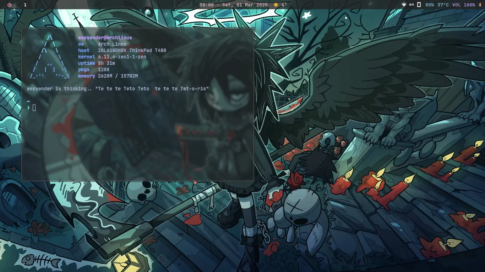
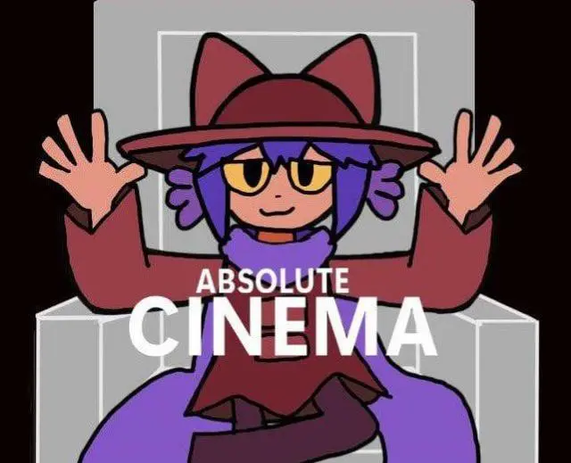

UPDATE: New url avable at eepyender.lol
Introduction
I'm from the Balkan triangle, more exactly from Romania 🇷🇴.
I only do random shit that I like but I ain't no expert at any of them.
What I like
· Vocaloid
Vocaloid
On March 18, 2022, YouTube introduced me to a genre of music that I quickly became obsessed with through "Lagtrain" by Inabakumori: Vocaloid, and later, J-Pop and J-Rock. I've enjoyed everything Inaba has produced over the years.
Around April 2022, I discovered another musician I like, TUYU, through the song "Being Low as Dirt, Taking What's Important from Me" on Spotify. In the autumn of that year, I found another artist I enjoy, Harumaki Gohan. My appreciation for his music grew over time, and I eventually bought the album "Futarino".
Some other artists I like include wowaka, ime44, iyowa, and DECO*27.
My favorite song is "If I Could Become a Comet" by Harumaki Gohan.
· Linux
Linux
In January 2021, I began experiencing persistent WiFi issues on my Windows computer. Despite finding temporary fixes, the problems persisted until February when a friend recommended trying Linux, specifically ZorinOS Lite, which he was using at the time. Without a USB stick or DVD, I managed to boot the ISO from my hard drive. I liked ZorinOS after testing it from the live environment, but in an unfortunate attempt to install it, I accidentally erased my Windows system along with the ISO file, leaving me without an operating system.
After a week, I was able to install Lubuntu from an SD card. Using DVDs, I eventually burned a Windows 8.1 DVD and reinstalled Windows, subsequently upgrading to Windows 10 without needing a DVD. However, the appeal of Linux remained strong. A few months later, I successfully installed Linux again, though initially, I had to use USB tethering to get WiFi working. I began dual-booting Windows with ZorinOS but found myself using ZorinOS more frequently, leading me to switch entirely to ZorinOS.
I used ZorinOS for over a year and enjoyed it, but I wanted to try Wayland and found ZorinOS 16's GNOME version kinda outdated for that. This led me to Fedora 38 Workstation, which I loved and used for another year. In April 2024, I decided to try ArchLinux and successfully installed it. I switched from GNOME to Hyprland, which I continue to use and enjoy to this day.

· OneShot
Oneshot
Niko, my beloved.
